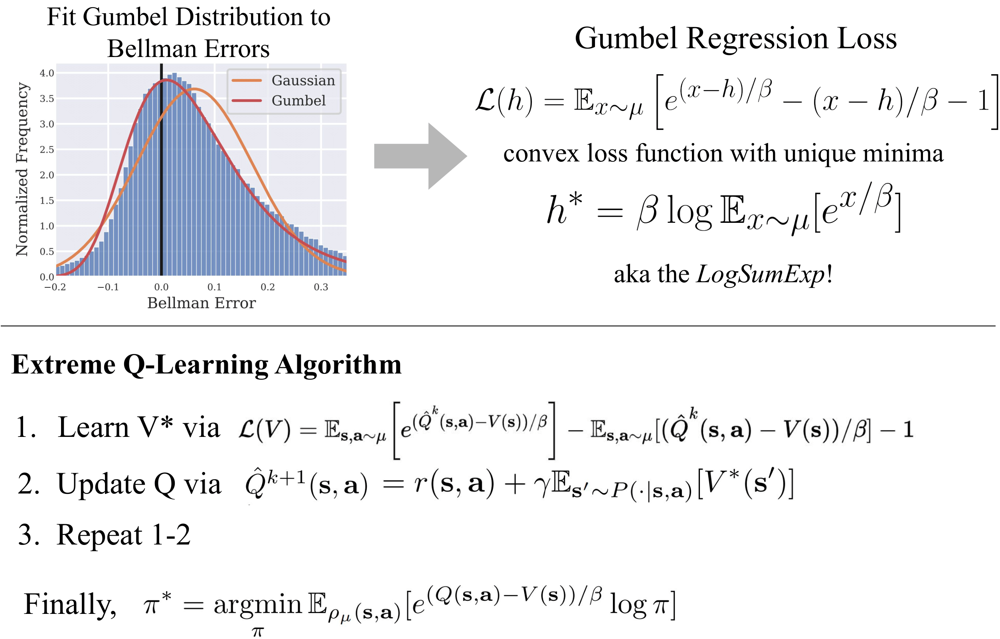
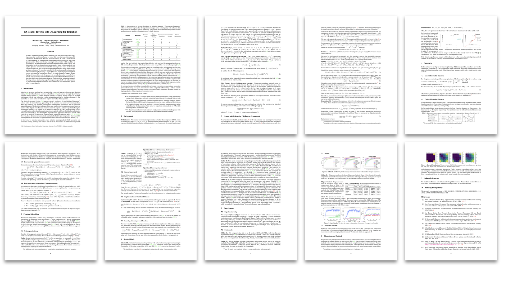

|
|
TLDR: A novel framework
for
Q-learning that models the maximal
soft-values without needing to sample from a policy.
|
Abstract
Modern Deep Reinforcement Learning (RL) algorithms require estimates of the maximal Q-value,
which are difficult
to
compute in continuous domains with an infinite number of possible actions. In this work, we
introduce a new
update
rule for online and offline RL which directly models the maximal value using Extreme Value
Theory (EVT), drawing
inspiration from Economics. By doing so, we avoid computing Q-values using out-of-distribution
actions which is
often a substantial source of error.
Our key insight is to introduce an objective that directly
estimates the
optimal soft-value functions (LogSumExp) in the maximum entropy RL setting without needing to
sample from a
policy.
Using EVT, we derive our Extreme Q-Learning framework and consequently online and, for
the first time,
offline MaxEnt Q-learning algorithms, that do not explicitly require access to a policy or its
entropy.
Our method obtains consistently strong performance in the D4RL benchmark, outperforming prior
works on some
tasks while offering moderate improvements over SAC and TD3 on online DM Control tasks.
Approach
|  |
Offline Results
|
|
|
(Above) XQL reaching state of the art results on the Offline D4RL Benchmark
|
 |
 |
|
TODO: insert offline RL GIF
|
TODO: insert offline RL GIF
|
Online Results
|
|
|
X-TD3 showing gains on some DM Control Tasks versus standard TD3.
|
|
|
|
|
X-SAC on Hopper Hop (Reward 362)
|
SAC on Hopper Hop (Reward 305)
|
Paper
|  |
|
|
|
|
Citation
@inproceedings{
garg2022extreme,
title={Extreme Q-Learning: MaxEnt Reinforcement Learning Without Entropy},
author={Divyansh Garg and Joey Hejna and Matthieu Geist and Stefano Ermon},
journal={arXiv preprint arXiv:TODO},
year={2022},
url={TODO}
}